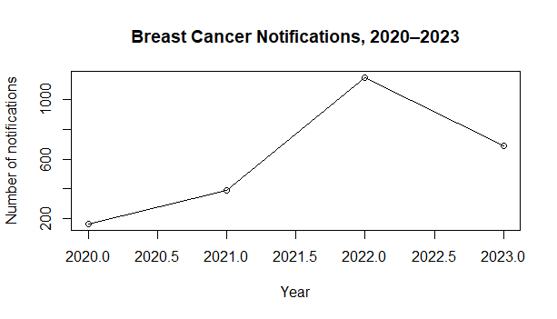

This project demonstrates my practical skills in data cleaning, analysis, interpretation and data visualization using R.
R, RStudio, data visualization and statistical analysis.
.... my existing outcome ...

Nairobi, Nakuru, and Nyeri recorded the highest breast cancer notifications between 2020–2023.

Notification counts varied widely by county, with Nairobi accounting for the largest share.
The analysis strengthened my ability to transform raw research data into meaningful findings that can support evidence-based decision-making.